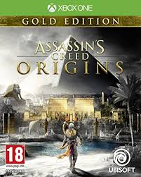
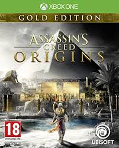

PlayerUnknown Battlegrounds is a battle royale game where the last mand standing wins the game, have a look at this
Youtube link to watch a full game review: https://www.youtube.com/watch?v=1QrMKnhvnsk
Skyrim is an open world game where you can choose any class you want to complete thousands of main or side missions
Youtube link to watch the full game review: https://www.youtube.com/watch?v=bH1GUi8rNQk
Assassins creed origins is another Assassins creed game where you become the Assassin and complete both main missions or side
quests so jump in the assassins creed origins and sneak your way around the open world
Youtube link to watch the full game review https://www.youtube.com/watch?v=aZG_PFZh-HQ